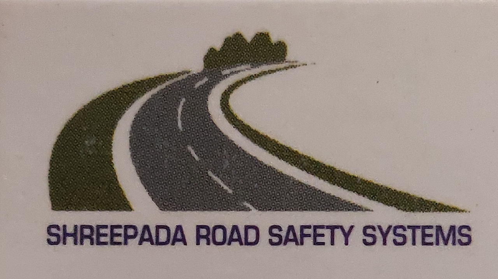

Mr K.N Ananda Kumar is the founder of SPRSS,he started this company in 2015. He has 8 years of experience in this field

SHREEPADA ROAD SAFETY SYSTEM
SHREEPADA ROAD SAFETY SYSTEMS is a medium range business company, which mainly works on road marking. Road traffic safety refers to the methods and measures used to prevent road users from being killed or seriously injured. The basic strategy of a safe system approach is to ensure that in the event of a crash, the impact energies remain below the threshold likely to produce either death or serious injury. The company was inaugurated in the year 2015 initially with the intention of providing materials to the people, who is actually into road marking business. The founder of this company is
Mr K.N Ananda Kumar, he has eight years of experience in this field.